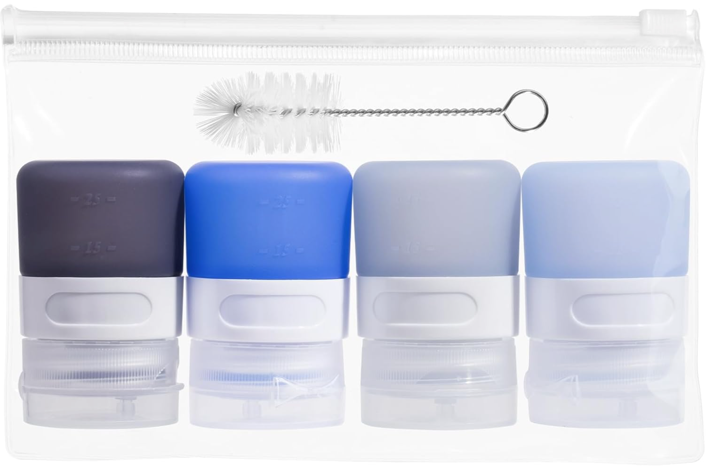

🫒 🥗 🌿
📅 Week 1 Tasting Set
Mediterranean & Classic EVOO Dressings
Four familiar, crowd-friendly vinaigrettes built entirely on EVOO — no seed oils. These are the most versatile of the five sets: they work on any salad, as marinades, and as dipping oil. All use dried herbs only, so every bottle keeps 2–3 weeks in the refrigerator. Use a standard green label on the bottle tops.
📏 12 oz batch = 12 × 1-oz squeeze bottles. Divides evenly: half batch = 6 oz · third = 4 oz · quarter = 3 oz. All four recipes follow the same 3:1 EVOO-to-acid ratio — 18 tbsp oil + 6 tbsp acid = 24 tbsp = 12 fl oz.
Bottle label guide — this set
🟢 Standard label — all 4 recipes · 2–3 weeks refrigerated

🧴 1 oz Silicone Squeeze Bottles — Micebay
Fill each batch into individual 1-oz squeeze bottles and refrigerate the whole set. Before each meal, pull one or two bottles out and set them on the counter for 10–15 minutes — olive oil solidifies in the refrigerator and needs a few minutes at room temperature to return to pourable. One bottle = one 1-oz serving. Only warm what you need; keep the rest cold.
🛒 Order on Amazon →
1
Greek Red Wine Vinaigrette
✓ 2–3 weeks refrigerated
Ingredients — 12 oz batch
- 18 tbspExtra-virgin olive oil (= 1 cup + 2 tbsp)
- 6 tbspRed wine vinegar
- 1 tspDijon mustard
- 1 tspDried oregano
- ½ tspGarlic powder
- ½ tspFine sea salt
- ¼ tspBlack pepper
Oil
Acid
Emulsifier & seasoning
18 + 6 = 24 tbsp = 12 fl oz ✓ · half batch: 9 tbsp EVOO + 3 tbsp vinegar
Method
- 1Combine in jarAdd all ingredients to a clean glass jar with a tight-fitting lid.
- 2Shake to emulsifySeal and shake vigorously for 30 seconds. The Dijon binds the oil and vinegar into a cohesive dressing. It will re-separate on standing — shake again before each use or before filling bottles.
- 3Fill & label bottlesPour into 12 × 1-oz silicone squeeze bottles using a small funnel or a squeeze bottle with a larger opening. Apply green standard label to tops. Refrigerate. EVOO will thicken and cloud when cold — this is normal. Rest at room temperature 5 minutes or squeeze under warm water 20 seconds before use.
What's working: Raw EVOO at full dose per serving — oleocanthal (COX-1/COX-2 inhibition, APOE4 neuroprotection) fully intact. Red wine vinegar contributes resveratrol and anthocyanin residues. Dried oregano provides rosmarinic acid (anti-inflammatory, antimicrobial). Garlic powder contributes sulfur compounds even in dried form. Oxalate: negligible at 1-oz serving.
2
Lemon-Oregano Dressing
✓ 2–3 weeks refrigerated
Ingredients — 12 oz batch
- 18 tbspExtra-virgin olive oil (= 1 cup + 2 tbsp)
- 5 tbspFresh-squeezed lemon juice (about 2 lemons)
- 1 tbspWater
- 1½ tspDried oregano
- ¾ tspGarlic powder
- ½ tspFine sea salt
- ¼ tspBlack pepper
Oil
Acid
Seasoning
18 + 5 + 1 = 24 tbsp = 12 fl oz ✓ · Squeeze fresh lemons on batch day; lemon juice keeps fine in the fridge 2–3 weeks
Method
- 1Juice lemonsSqueeze lemons and measure 5 tbsp juice. Strain seeds. (Lemon juice is the acid here — no emulsifier needed since the ratio is slightly less acidic than pure vinegar and garlic powder provides light suspension.)
- 2Combine & shakeAdd all ingredients to jar. Seal and shake 30 seconds. This one separates faster than Recipe 1 (no Dijon), so give each bottle a firm shake before squeezing.
- 3Fill & labelFill 12 × 1-oz silicone bottles. Green standard label. Refrigerate.
What's working: Lemon juice provides limonene (anti-inflammatory, APOE4 relevant) and urinary citrate (inhibits calcium oxalate crystal formation — kidney stone protection). Dried oregano at 1½ tsp per batch delivers rosmarinic acid and thymol. EVOO raw dose preserved fully. Best on: arugula, spinach, Greek salads, over grilled fish. Oxalate: negligible.
3
Italian Herb Dressing
✓ 2–3 weeks refrigerated
Ingredients — 12 oz batch
- 16 tbspExtra-virgin olive oil (= 1 cup)
- 6 tbspApple cider vinegar (ACV) — raw, with mother
- 2 tbspWater
- 1 tspDried basil
- ½ tspDried oregano
- ½ tspDried thyme
- ¾ tspGarlic powder
- ¼ tspOnion powder
- ½ tspFine sea salt
- ¼ tspBlack pepper
Oil
Acid
Herbs & seasoning
16 + 6 + 2 = 24 tbsp = 12 fl oz ✓ · ACV makes this the mildest-tasting of the four — use raw ACV with mother for acetic acid benefit
Method
- 1CombineAdd all ingredients to jar. The water tempers the ACV sharpness and improves pourability from the silicone bottle.
- 2Shake & tasteShake vigorously 30 seconds. Taste from a spoon — adjust salt or add another ¼ tsp ACV if you prefer more bite.
- 3Fill & labelFill 12 × 1-oz silicone bottles. Green standard label. Refrigerate. Shake before use.
What's working: ACV doubles as a pre-diabetes intervention — acetic acid inhibits alpha-amylase and alpha-glucosidase, slowing glucose absorption from any starch in the salad. The herb blend (basil, oregano, thyme) collectively provides rosmarinic acid, thymol, and ursolic acid — all with anti-inflammatory activity. This is the most familiar "Italian dressing" flavor of the set. Best on: romaine, chopped salads, as a light chicken marinade. Oxalate: trace from herbs, negligible per serving.
4
Balsamic-Dijon-Thyme Dressing
✓ 2–3 weeks refrigerated
Ingredients — 12 oz batch
- 18 tbspExtra-virgin olive oil (= 1 cup + 2 tbsp)
- 4 tbspBalsamic vinegar
- 2 tbspWater
- 1½ tspDijon mustard
- 1 tspDried thyme
- ½ tspFine sea salt
- ¼ tspBlack pepper
Oil
Acid
Emulsifier & seasoning
18 + 4 + 2 = 24 tbsp = 12 fl oz ✓ · Balsamic used at lower volume (it is thicker and sweeter than wine vinegar); water balances consistency for squeeze bottle use
Method
- 1CombineAdd all ingredients to jar. Balsamic is denser than wine vinegar — it settles to the bottom of the jar; the Dijon helps bind it into suspension once shaken.
- 2Shake wellShake vigorously 45 seconds — longer than the others because balsamic needs more agitation to stay in suspension. Shake each bottle firmly before use.
- 3Fill & labelFill 12 × 1-oz silicone bottles. Green standard label. Refrigerate.
What's working: Balsamic vinegar contributes polyphenols (quercetin, resveratrol) and acetic acid. At 4 tbsp in a 24-tbsp batch, each 1-oz serving contains about ⅓ tbsp balsamic — roughly 1g residual sugar. Not a blood sugar concern at this dose. Dried thyme delivers thymol and carvacrol, both with anti-inflammatory and hepatoprotective activity. Dijon holds the emulsion longer than the other three — this dressing separates most slowly. Best on: spinach + strawberry, arugula + pear, bitter greens. Rich flavor works well on heartier salads. Oxalate: trace, negligible per serving.
All four dressings are appropriate for
APOE4
Celiac / GF
DP / Blood Sugar
Fatty Liver
MTHFR
Kidney Stone
All ingredients are naturally gluten-free. All are very low oxalate at a 1-oz serving. Dried herbs at culinary doses contribute meaningful polyphenols without any significant oxalate load. EVOO raw delivery (no cooking) preserves oleocanthal fully.